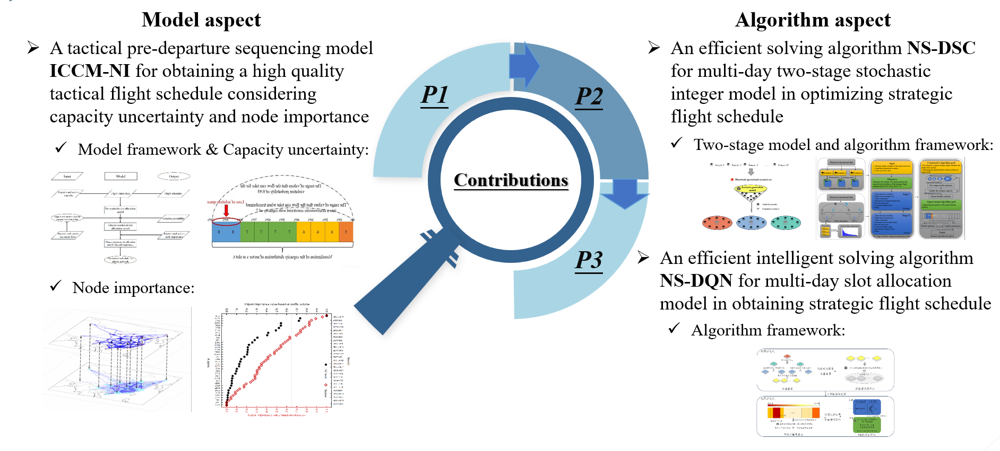

-
Always learn, Always pursue, Always enjoy

Biography
Haoran Hu is now a person with free time to execute his personal strategic plan that is called super individual construction in the AI generator era. This will be a long-term process of personal reinforcement learning. More specific descriptions can be found in the "Sharing" section at the bottom of this page. Before this, Haoran Hu was a graduate student pursuing a Master's degree in Transportation Engineering at Nanjing University of Aeronautics and Astronautics from September 2022 to April 2025. He studied for a Bachelor's degree in Transportation at Civil Aviation University of China from September 2018 to June 2022. During the postgraduate period, Haoran Hu has (co-)authored research articles accepted for publication or under revision in journals like Chinese Journal of Aeronautics (JCR Q1), Computers & Industrial Engineering (JCR Q1) and Journal of Transportation Engineering and Information (T1, In Chinese).
Research Areas
Large-scale system optimization under uncertainty
Discriminative model and generative model
Reinforcement learning for optimization
Heuristic algorithms for engineering model solving
RESEARCH ARTICLES
ORCID,
Google scholar,
Web of science,
ResearchGate,
Github[with the main code of my research articles]
Robust pre-departure scheduling for a nation-wide air traffic flow management PDF download
Chinese Journal of Aeronautics(JCR Q1)
Co-First Author, Accept
A neighborhood search algorithm with dynamic search criteria to integrated optimization of the air traffic scheduling and operations PDF download [Abstract only, because the paper is under revision]
Computers & Industrial Engineering(JCR Q1)
First Author, Under Revision
A reinforcement learning and neighborhood search based algorithm to slot allocation for a network of airports PDF download [Abstract in English]
Journal of Transportation Engineering and Information(T1, In Chinese)
First Author, Accept
research articles overview and contribution
The PPT About My Master Research[can be downloaded, contain the four pictures below]

Research Article-1 Overview

Research Article-2 Overview

Research Article-3 Overview

Contribution
Personal skillsTry more, collect more, create more
Research
Machine Learning
Deep Learning
Reinforcement Learning
Operations Research
Heuristic Algorithms
Programming
Python/Jupyter Notebook
Javascript/HTML/CSS
Matlab
C++
Latex/Markdown
Language
Chinese(Native)
English(C2)
Design
Photoshop
Illustrator
Premiere
After Effects
Audition
Blender
miscellaneous
VS Code
Overleaf
Obsidian
VMware
Social Science
Game storyline collection and analysis
learning
Linux/Docker
Bayesian theory
Parameter estimation
Inverse optimization
UE5/Comfyui/ZBrush
Information theory/Cryptography
sharingexpert system, working flow, heuristic imagination, sharing together
Today, with the widespread application of generative AI, it's foreseeable that AI can help us create any functional module, based on the thinking of approximation.
Yet this doesn't mean we can use AI for creation as easily as controlling our own limbs—we often lack the theoretical expert systems of relevant disciplines, practical workflows of related industries, and heuristic imagination.
For me, constructing the super individual requires numerous theoretical expert systems and practical workflows. No shortcuts are available.
Take traditional machine learning (dominated by discriminative models) as an example: theoretical expert systems remind us to learn prerequisite knowledge (e.g., the basic concepts in probability & statistics and information theory),
common mathematical thinking (e.g., substitution, transformation, approximation, generalization, induction, naming habits of mathematical symbols in high-dimensional spaces), and sources of algorithm design inspiration (e.g., daily life, other disciplines/industries).
Practical workflows, meanwhile, give us an architect's holistic perspective, helping organize functional modules to turn ideas into reality. Without these two, we always invest a lot but gain little.
To solve this, I'll organize and share my personal knowledge repository. I believe countless useless knowledge modules can drive qualitative change. Even if nothing happens, at least I will have mastered an efficient methodology for building expert systems and workflows in new fields.
However, PhD application is still my current priority. Open-source sharing classes will be opened gradually in the future! If you're willing to help (e.g., giving advice on any aspect, providing a recommendation or even a potential opportunity), I'd be grateful.
All the best to you!
Every good wish for you!
Good fortune follows you!
Happiness lights your days!
Much success in your work!
Good health stays with you!
Warm blessings always to you!
***********************************!!!
Machine learning
To be opened in the future
Deep learning
To be opened in the future
…………
To be opened in the future
© Copyright Haoran Hu 2025. All Rights Reserved.